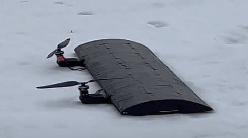

Helicopter
Overview
This was my capstone project for the University of Waterloo. My group and I designed a long range solar-powered drone for ultra long range applications. The theory was to design a fixed-wing VTOL drone with a solar panel array for range extension. The prupose of this drone was to provide disaster relief to inaccessible areas by delivering crucial supplies such as medical supplies and food. A fleet of these drones could also act as a mobile solar power station.

Challenges & Solutions
The challenge for this project is to maximize the range and payload capacity of this drone. This meant having as efficient flight as possible which is why we implemented a fixed wing design rather than a rotary wing design (like a quadcopter). Since this drone was to be used in remote locations, we had to design the drone to have vertical takeoff and landing capabilities, as there would be no runways or launch mechanisms available. To extend therange even further, solar cells were integrated into the design. This not only meant that the drone could charge while in flight, but could also land and recharge, for a theoretically unlimited range.
Technical Details
The Flying Wing
To maximize flight efficiency, a flying wing design was used. A flying wing is a type of aircraft whose entire construction is a wing, with no separate fuselage or tail. The theory here is that any surface that isnt contributing to lift is a waste of energy via drag. This means that all of the payload, battery, and electronics are hosted in the wing itself.
Construction
The drone had to be as lightweight and stiff as possible, so the body was built from carbon fiber. The top of the wing was covered in an array of solar cells for range extension, so an aerodynamic and secure fastening method needed to be used. We decided to encapsulate the solar cells with epoxy above the top layer of carbon fiber. This meant that a smooth surface could be achieved, while securely holding the solar cells in place. This is an unconventional way of fastening solar cells as epoxy is known to yellow over time, but this effect was not going to be a significant issue for the lifetime of the drone.
The drone was constructed from two panels of carbon fiber to form the upper and lower parts of the wing. These two panels were hinged together at the leading edge of the wing to access the electronics and payload. The two panels where locked together for flight.
VTOL
For the drone to be able to take off autonomously from anywhere, it needed to have vertical takeoff and landing capabilities. This was achaived with a pair of gimballing and counter-rotating propellers. Before takeoff, the drone is in a horizontal position, with the propellers gimballed to face upwards. To takeoff, the propellers are spun up to enerate lift and the drone begins to pivot on its trailing edge. As the drone pivots, the propellers gimbal to remain vertical. Once the drone is vertial, the propellers increased their lift to put the drone in a hover, much like a chinook helicopter. In this hovering mode of flight, the drone can be flown like a helicopter. The drone can then transition to horizontal flight by gimbaling the propellers forward and pitching the drone forward. The drone then flies like a fixed wing aircraft, with the propellers providing thrust and the wings providing lift.
Results & Outcomes
A prototype of the aircraft architecture was sucessfully constructed out of foam and flown in both fixed-wing and hovering modes. The full production prototype was fully built but we ran out of time before a full test could be conducted. Many of the solar cells cracked while being installed on the wing due to a clumsy installation process, so solar charging was not fully effective.
Learnings
Overall, this project showed that the architecture of this aircraft is viable for VTOL and fixed wing flight. However, taking smaller steps in development would have allowed for more thorough testing and refinement of all the sub systems. Rather than building a fully integrated prototype after the foam wing prototype, a carbon fiber prototype without the solar cells should have been built and tested first, as well as a non-flying test of the encapsulated solar cells and its manufacturing techniques.